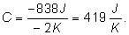
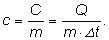
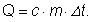

Elemente de termodinamică. |
Calorimetrie |
C-3. Coeficienţi calorici
Când ai nevoie de apă fierbinte pentru un ceai, poţi folosi un fierbător electric sau maşina de gătit cu gaze. Oricare
metodă de încălzire alegi, trebuie transferată apei o anumită cantitate de energie.
 Activitatea experimentală 3-1
Activitatea experimentală 3-1
Măsoară câtă energie trebuie transferată pentru a încălzi un sistem. Lucrează în echipă.
Pasul 1. Puneţi într−un termos (sau într−un calorimetru din laborator) un termometru şi un
încălzitor cu imersie a cărui putere o cunoaşteţi (este înscrisă pe acesta). Turnaţi apă până când partea metalică a
încălzitorului este cufundată în apă. Nu conectaţi încă încălzitorul la reţea.
Pasul 2. Aşteptaţi stabilirea echilibrului termic între apă, vasul termosului, încălzitor şi termometru.
Notaţi temperatura sistemului.
Pasul 3. Conectaţi încălzitorul la reţea şi cronometraţi un minut de funcţionare a acestuia. După aceea deconectaţi−l. Notaţi
temperatura finală atinsă de sistem. Îndepărtaţi încălzitorul şi termometrul, apoi măsuraţi volumul apei din termos.
Pasul 4. Calculaţi câtă energie a transferat încălzitorul sistemului pentru a−i produce variaţia de
temperatură pe care a−ţi măsurat−o.
Cantitatea de energie care trebuie furnizată unui sistem pentru a−i modifica temperatura cu un kelvin este o caracteristică
a sistemului.
 Provocarea 3-1
Provocarea 3-1
Câtă energie trebuie transferată sistemului din activitatea experimentală 3−1 pentru a−i modifica temperatura
cu un kelvin?
 Numim capacitate calorică a unui sistem rezultatul împărţirii
cantităţii de căldură primită sau cedată de sispem la variaţia de temperatură a acestuia:
Numim capacitate calorică a unui sistem rezultatul împărţirii
cantităţii de căldură primită sau cedată de sispem la variaţia de temperatură a acestuia:
Unitatea de măsură pentru capacitatea calorică, în Sistemul Internaţional este J/K (joule/kelvin).
Provocarea 3-2
Cât este capacitatea calorică a unui sistem care cedează 838 J răcindu−se cu 2 K?
Pentru acest sistem, Q=−838 J (căldură cedată) şi Δt=−2 K (temperatura scade). Astfel,
capacitatea calorică a sistemului este:

Cunoscând capacitatea calorică a unui sistem, poţi calcula cât este cantitatea de căldură care trebuie cedată sau primită
de sistem pentru a−i produce o modificare dorită de temperatură:
Q=C·Δt.
În relaţia precedentă, capacitatea calorică a sistemului are rolul unui coeficient. Capacitatea calorică este un coeficient
caloric.
Provocarea 3-3
În experimentul precedent, cea mai mare parte a energiei furnizate de încălzitor a primit−o apa. Neglijând celelalte
transferuri de energie, cât este capacitatea calorică a apei din termos?
Unele sisteme termodinamice au o compoziţie omogenă (sunt alcătuite dintr−o singură substanţă). Putem caracteriza
fiecare substanţă în parte prin cantitatea de energie care trebuie furnizată fiecărui kilogram din acea substanţă
pentru a−i modifica temperatura cu un kelvin.
Numim căldură specifică a unei substanţe, capacitatea
calorică a fiecărui kilogram din acea substanţă.
Astfel,

unde Q este cantitatea de căldură transferată, m este masa cantităţii din acea substanţă, iar Δt
este variaţia de temperatură produsă.
Unitatea de măsură pentru căldura specifică, în Sistemul Internaţional, este J/(kg·K).
Cunoscând căldura specifică a unei substanţe, poţi calcula cantitatea de căldură necesară modificării temperaturii unei
cantităţi din acea substanţă:

Căldura specifică este un coeficient caloric.
Provocarea 3-4
Folosind datele din experimentul precedent, cât obţii pentru căldura specifică a apei?
Tabelul 3−1 prezintă căldurile specifice pentru câteva substanţe uzuale:
Tabelul 1-1. Călduri specifice la presiune constantă (la temperatura
293 K şi presiune atmosferică normală).
| Substanţa |
Căldura
specifică
J/(kg·K) |
| apă |
4190 |
| gheaţă |
2100 |
| aer |
993 |
| aluminiu |
913 |
| sticlă |
670 |
| oţel |
420 |
| cupru |
385 |